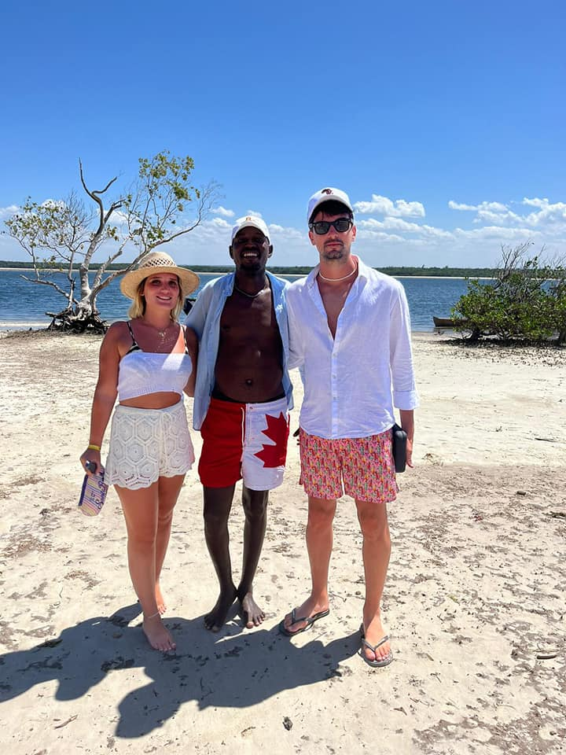
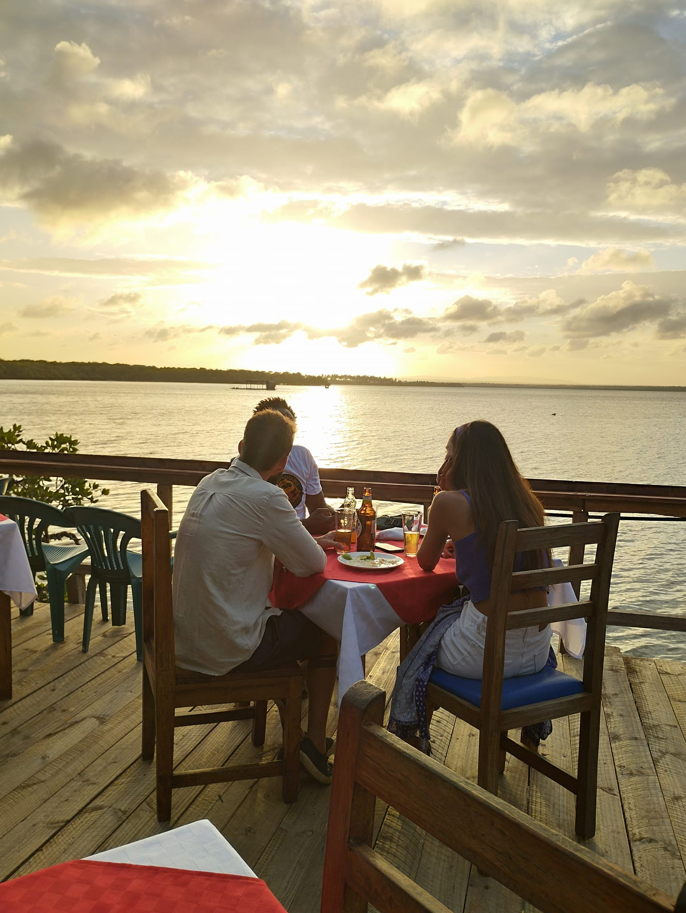
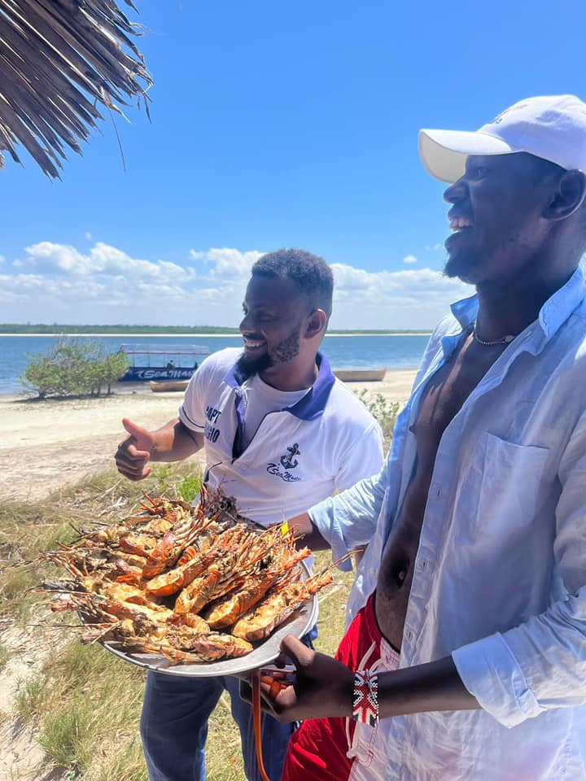

Escursione di mezza giornata tra natura e tramonti africani



In Africa i tramonti sono sempre spettacolari, ma visti da una canoa circondata dalle mangrovie diventano un’esperienza davvero indimenticabile.
La caratteristica di questi alberi è la presenza delle particolari radici che emergono dal fango creando paesaggi unici e suggestivi.
Raggiungeremo la zona di Birdwatch e la riva del parco, dove saliremo a bordo della tipica canoa scavata nel legno di baobab.
Navigheremo lentamente tra le mangrovie aspettando il tramonto africano, immersi nei colori e nei suoni della natura.
Non dimenticate la macchina fotografica: sarà una delle escursioni più scenografiche della vostra vacanza.
Possibilità di cenare nelle caratteristiche palafitte all'interno del parco.